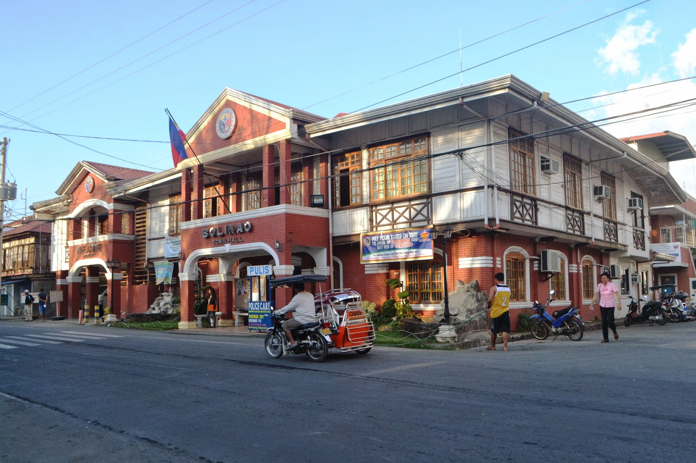

Pangasinan is a province blessed with stunning beaches, hidden lagoons, and scenic viewpoints. Its destinations combine natural beauty, adventure, and peaceful retreats—perfect for travelers looking to relax, explore, or capture breathtaking views.
Pangasinan History and Heritage:
Pangasinan Provincial Capitol Building
Quick Facts
- Location: Alvear East, Poblacion, Lingayen, Pangasinan
- Completed: December 1918; inaugurated February 11, 1919
- Architect: Ralph Harrington Doane (under the Burnham Plan)
- Architectural style: Neoclassical
- Heritage status: Declared provincial heritage site (2018)
A grand neoclassical government building in Lingayen that stands as a symbol of Pangasinan’s political history and architectural elegance.
Built during the American colonial period in the early 1900s, the Capitol reflects the influence of American-era civic architecture. It became the center of provincial governance and witnessed major historical events, including World War II activities in Lingayen Gulf.
The building represents Pangasinan’s journey through colonial rule, war, and independence. It remains a working government center and a source of provincial pride.
St. James the Great Parish Church
Quick Facts
- Location: Bolinao, Pangasinan, Philippines
- Denomination: Roman Catholic (Archdiocese of Lingayen–Dagupan)
- Dedication: St. James the Great
- Construction material: Coral stone and limestone
- Notable feature: Baroque-style façade with a massive belfry
One of the oldest churches in Pangasinan, known for its massive stone structure and historic bell tower. Established by Augustinian missionaries in the 1600s, the church was built using coral stones and survived natural disasters and centuries of change. It stands as a testament to early Spanish evangelization and remains central to Bolinao’s religious life.
View MoreBolinao Lighthouse
Quick Facts
- Location: Punta Piedra Point, Patar, Bolinao, Pangasinan
- Construction year: 1903–1905
- Height: 30.78 m (101 ft); 351 ft above sea level
- Engineers: Filipino, British, and American collaboration
- Managed by: Philippine Coast Guard and Municipality of Bolinao
A historic lighthouse perched on a hill, offering sweeping views of the West Philippine Sea. Constructed in 1905 during the American period, the lighthouse was built to guide ships safely through the waters of Cape Bolinao. It symbolizes Bolinao’s maritime heritage and long-standing relationship with the sea.
View MoreLingayen Gulf WWII Memorials
Quick Facts
- Location: Lingayen, Pangasinan, Philippines
- Commemorates: 1945 Allied landings in Luzon
- Primary site: Veterans Memorial Park, Lingayen
- Annual event: Lingayen Gulf Landing Anniversary (January 9)
A collection of monuments and markers commemorating the historic World War II landings in Lingayen Gulf. Lingayen Gulf was a key landing site for Allied forces in January 1945 during the liberation of the Philippines from Japanese occupation. The memorials honor the bravery of Filipino and Allied soldiers who fought for freedom.
View MoreBolinao Heritage Museum

Quick Facts
- Location: Bolinao, Pangasinan, Philippines
- Established: Early 2000s (local initiative)
- Focus: Archaeological, historical, and ethnographic artifacts
- Notable artifacts: Bolinao Skull and ancient burial items
- Managed by: Local government and community historians
A small but significant museum showcasing ancient artifacts and archaeological discoveries from Bolinao. The museum houses relics dating back centuries, including pottery, tools, and burial jars uncovered in archaeological digs. It highlights Bolinao’s pre-colonial roots and the rich trading culture that existed long before Spanish arrival.
View More